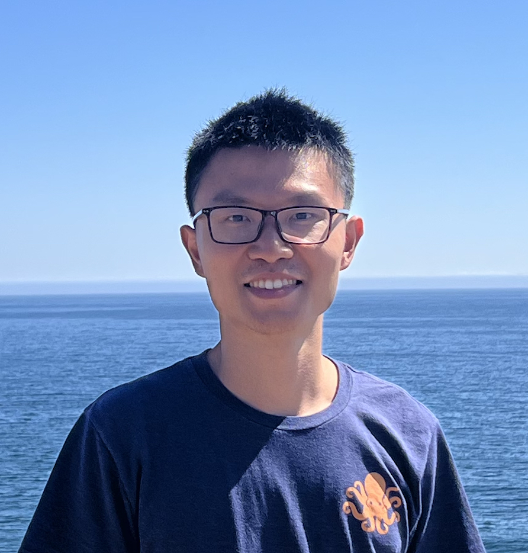
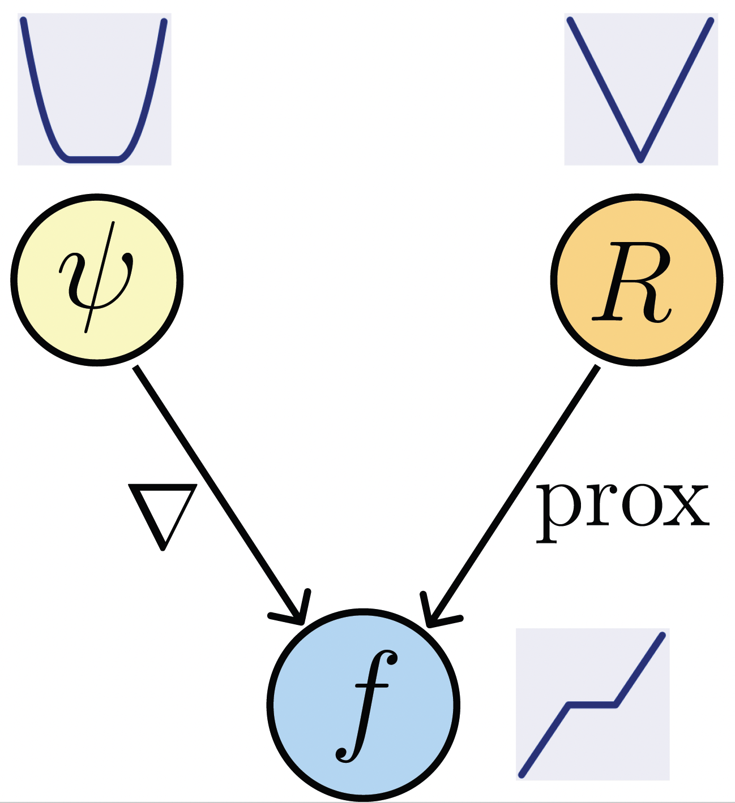

|
Zhenghan Fang I'm a PhD student at Johns Hopkins University in Baltimore, affiliated with the Department of Biomedical Engineering and the Mathematical Institute for Data Science. I'm advised by Jeremias Sulam. I am a recipient of the Kavli NDI Distinguished Graduate Student Fellowship. Previously, I received my M.S. in Biomedical Engineering from University of North Carolina at Chapel Hill and my B.S. in Electronic Engineering from Fudan University. I have also worked as an algorithm engineer at Keya Medical. |
 |
{kind=link}
ResearchI'm interested in machine learning, inverse problems, medical imaging, and computer vision. My research focuses on theory and algorithms for interpretable and trustworthy machine learning for inverse problems, as well as deep learning methods for imaging neural fibers in the brain with magnetic resonance imaging. |
|  |
What's in a Prior? Learned Proximal Networks for Inverse Problems
Zhenghan Fang*, Sam Buchanan*, Jeremias Sulam ICLR, 2024 project page / talk / slides / arXiv / code Learned proximal networks (LPN) are deep neural networks that exactly parameterize proximal operators. When trained with our proposed proximal matching loss, they learn expressive and interpretable priors for real-world data distributions and enable convergent plug-and-play reconstruction in general inverse problems! |

|
DeepSTI: Towards tensor reconstruction using fewer orientations in susceptibility tensor imaging
Zhenghan Fang, Kuo-Wei Lai, Peter van Zijl, Xu Li, Jeremias Sulam Medical Image Analysis, 2023 paper / code We propose a data-driven deep unrolling approach for dipole inversion problem in susceptibility tensor imaging, reducing the number of head orientations that need to be acquired and closing the gap to clinical application. |
|
This website template was adapted from Jon Barron's academic website. |